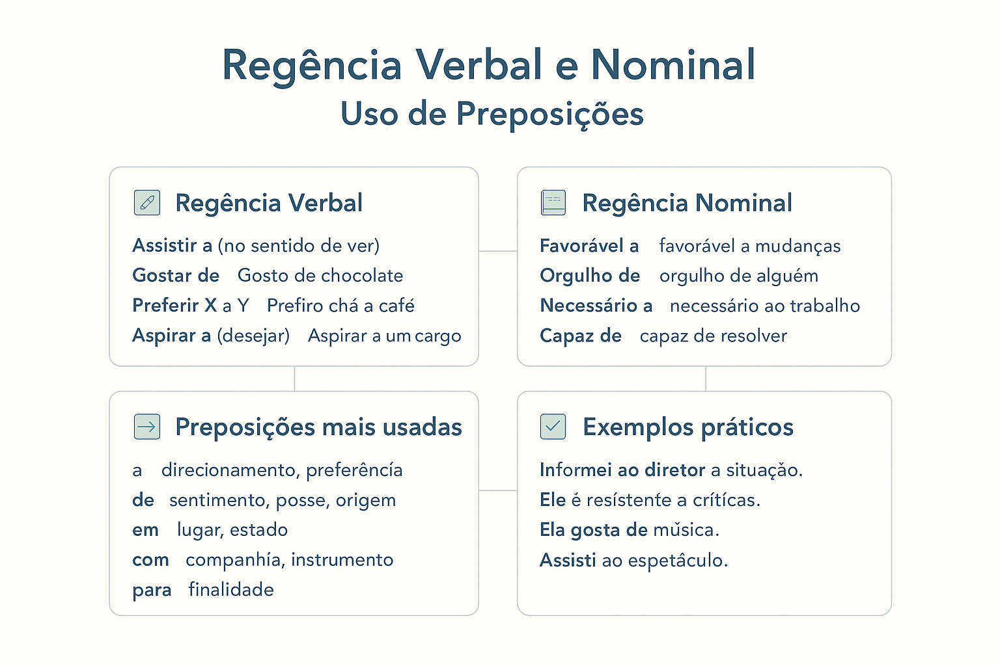

Regência Verbal e Nominal: conceito, regras, exemplos e uso das preposições
A regência verbal e nominal é um dos conteúdos mais importantes da Gramática da Língua Portuguesa. Ela determina quais preposições devem ser utilizadas para estabelecer a ligação correta entre verbos, nomes e seus complementos.
Compreender as regras de regência ajuda a produzir textos mais claros, evitar desvios da norma-padrão e interpretar adequadamente questões de vestibulares, concursos públicos, ENEM e PAES UEMA.
Além disso, a regência está diretamente relacionada a outros temas gramaticais importantes, como crase, análise sintática, complemento nominal, objeto indireto e interpretação textual.

O que é regência?
Em gramática, regência é a relação de dependência que ocorre entre duas palavras. Existe um termo chamado regente, que exige determinado complemento, e um termo chamado regido, que completa seu sentido.
Dependendo do termo regente, a regência pode ser:
- Regência verbal: quando o termo regente é um verbo.
- Regência nominal: quando o termo regente é um nome (substantivo, adjetivo ou advérbio).
O conhecimento dessas relações é fundamental para o uso correto das preposições.
O que é regência verbal?
A regência verbal estuda a relação entre os verbos e seus complementos. Alguns verbos exigem preposição obrigatória, enquanto outros ligam-se diretamente ao complemento.
Essa diferença determina se o verbo será transitivo direto, transitivo indireto ou transitivo direto e indireto.
Exemplos:
✔️ Ela ajudou o amigo.
Nesse caso, o verbo não exige preposição.
✔️ Ela gosta de música.
Nesse exemplo, o verbo exige a preposição de.
Quando usar a preposição “a” na regência verbal?
A preposição a aparece com frequência em verbos que exigem complemento indireto.
Assistir (no sentido de ver)
Assisti ao documentário ontem.
Aspirar (no sentido de desejar)
Ela aspira a uma carreira internacional.
Obedecer
Os alunos obedeceram às orientações.
Agradar (satisfazer)
O espetáculo agradou ao público.
Chegar, ir e voltar
Cheguei à escola cedo.
Fomos ao teatro.
Erros comuns:
❌ Assisti o filme.
✔️ Assisti ao filme.
❌ Obedeça seus pais.
✔️ Obedeça a seus pais.
Quando usar a preposição “de” na regência verbal?
A preposição de é uma das mais frequentes na Língua Portuguesa.
Gostar
Gosto de literatura brasileira.
Precisar
Preciso de ajuda.
Cuidar
Cuide de sua saúde.
Lembrar-se
Lembrei-me de sua mensagem.
Esquecer-se
Esqueci-me da reunião.
Tratar (assunto)
O texto trata de sustentabilidade.
Erros comuns:
❌ Preciso ajuda.
✔️ Preciso de ajuda.
❌ Gosto música clássica.
✔️ Gosto de música clássica.
Outras preposições importantes na regência verbal
Verbos que exigem “em”
- Acreditar em → Acredito em você.
- Insistir em → Insistiu em participar.
- Pensar em → Pensei em mudar de cidade.
- Morar em → Moro em São Luís.
Verbos que exigem “com”
- Concordar com → Concordo com sua opinião.
- Sonhar com → Sonho com um futuro melhor.
- Importar-se com → Ela se importa com todos.
Verbos que exigem “por”
- Optar por → Optou por permanecer.
- Responsabilizar-se por → Responsabilizou-se pelo projeto.
- Lutar por → Lutamos por justiça.
O que é regência nominal?
A regência nominal trata da relação entre um nome e o seu complemento. O termo regente pode ser um substantivo, um adjetivo ou um advérbio.
Assim como ocorre com os verbos, muitos nomes exigem uma preposição específica.
Exemplos:
Amor a Deus.
Medo de altura.
Favorável à proposta.
Quando usar a preposição “a” na regência nominal?
- Amor a → Amor à pátria.
- Obediência a → Obediência às normas.
- Referente a → Assunto referente ao edital.
- Relativo a → Informações relativas ao concurso.
Quando usar a preposição “de” na regência nominal?
- Medo de → Medo de altura.
- Orgulho de → Orgulho dos filhos.
- Desejo de → Desejo de vencer.
- Dúvida de → Dúvida sobre o resultado.
Quando usar a preposição “em” na regência nominal?
- Hábil em → Hábil em negociações.
- Rico em → Rico em nutrientes.
- Especializado em → Especializado em tecnologia.
Quando usar a preposição “com” na regência nominal?
- Satisfeito com → Satisfeito com o resultado.
- Preocupado com → Preocupado com o prazo.
- Compatível com → Compatível com o sistema.
Verbos que mudam de sentido conforme a regência
Alguns verbos alteram completamente seu significado dependendo da preposição utilizada.
- Assistir a = ver.
- Assistir alguém = prestar assistência.
- Aspirar a = desejar.
- Aspirar algo = sorver.
- Lembrar-se de = recordar.
- Lembrar algo = trazer à memória.
- Implicar em = acarretar.
- Implicar com = antipatizar.
Regência e uso da crase
A regência verbal e nominal possui relação direta com a crase. Sempre que um verbo ou nome exigir a preposição a e o termo seguinte admitir artigo feminino a, ocorrerá a fusão representada pelo acento grave.
Exemplos:
✔️ Obediência às regras.
✔️ Assisti à apresentação.
✔️ Referente à legislação.
Por esse motivo, muitas questões de crase exigem conhecimento prévio de regência.
Regência verbal e nominal em vestibulares e concursos
As bancas examinadoras frequentemente cobram:
- Emprego correto das preposições;
- Diferença entre objeto direto e indireto;
- Uso adequado da crase;
- Mudança de sentido dos verbos;
- Correção gramatical de frases;
- Reescrita de períodos sem alteração de sentido.
ENEM, PAES UEMA, FGV, FCC, Cebraspe e Fundação Carlos Chagas costumam explorar esse conteúdo de forma recorrente.
Resumo sobre regência verbal e nominal
A regência verbal estuda a relação entre verbos e seus complementos, enquanto a regência nominal analisa a relação entre nomes e seus complementos. O domínio dessas regras permite utilizar corretamente as preposições a, de, em, com, por e outras, garantindo maior clareza, precisão e adequação à norma-padrão da Língua Portuguesa.
Quiz — Regência Verbal e Nominal
Questão 1 — Em qual alternativa o verbo “assistir” foi empregado com a preposição correta?
A) Eu assisti o filme ontem.
B) Eu assisti ao filme ontem.
C) Eu assisti o rapaz na rua.
D) Eu assisti ao rapaz na rua, no sentido de ver.
Qual está correta?
Questão 2 — Qual frase apresenta regência correta do verbo “gostar”?
A) Eu gosto este livro.
B) Eu gosto desse livro.
C) Eu gosto de esse livro.
D) Eu gosto ao livro.
Questão 3 — Assinale a alternativa com regência nominal correta:
A) Ela é favorável a mudanças.
B) Ela é favorável de mudanças.
C) Ela é favorável com mudanças.
D) Ela é favorável para mudanças.
Questão 4 — Em qual alternativa o uso da preposição após o verbo “preferir” está correto?
A) Prefiro mais chá do que café.
B) Prefiro chá a café.
C) Prefiro chá do café.
D) Prefiro chá para café.
Questão 5 — Assinale a alternativa em que o verbo “informar” apresenta a regência correta:
A) Informei ao diretor a situação.
B) Informei a situação ao diretor.
C) Informei a situação para o diretor.
D) As alternativas A e B estão corretas.
Explore Outros Conteúdos
Continue seus estudos acessando outras seções do site Mestre Kira: